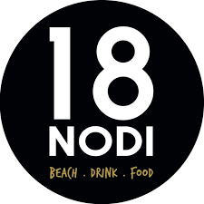
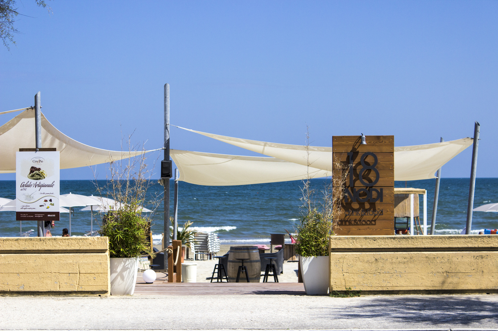
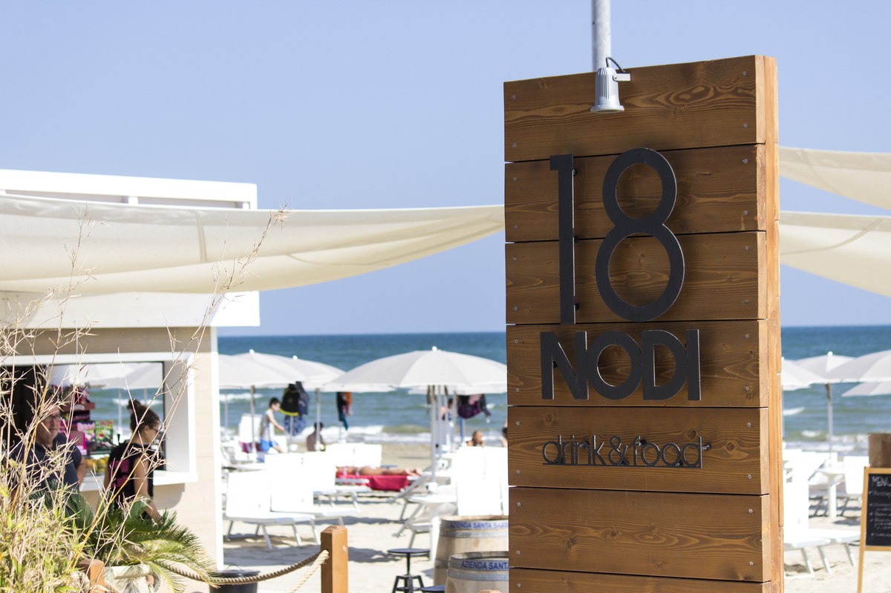
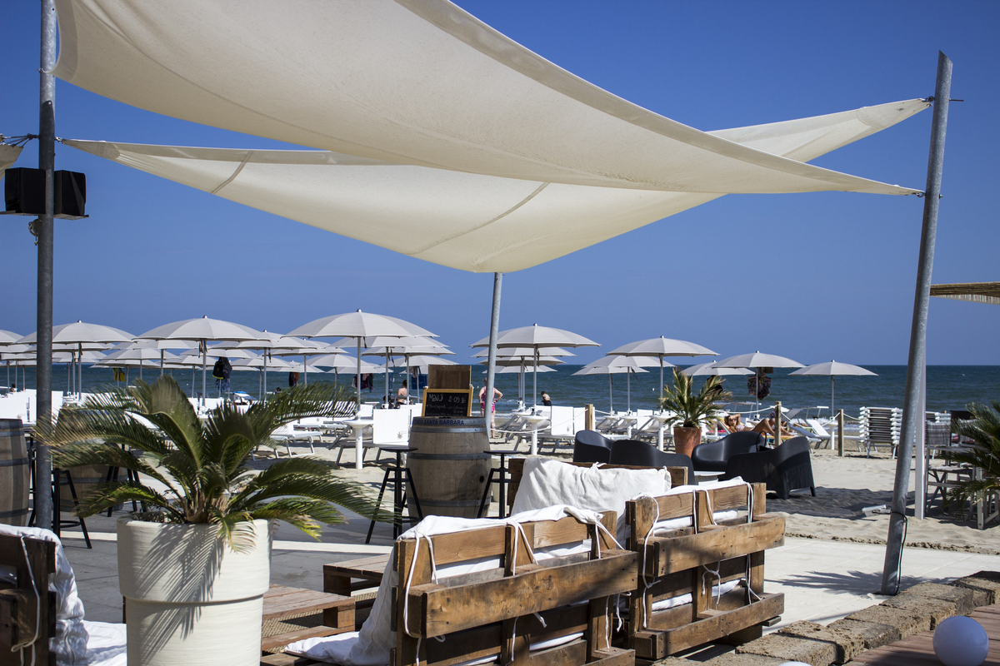
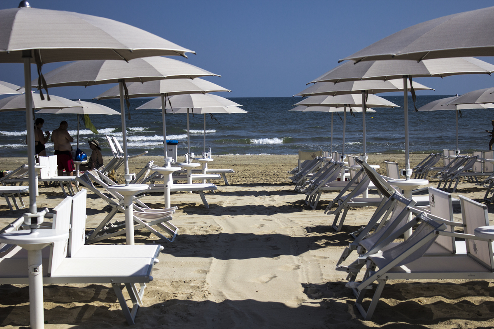
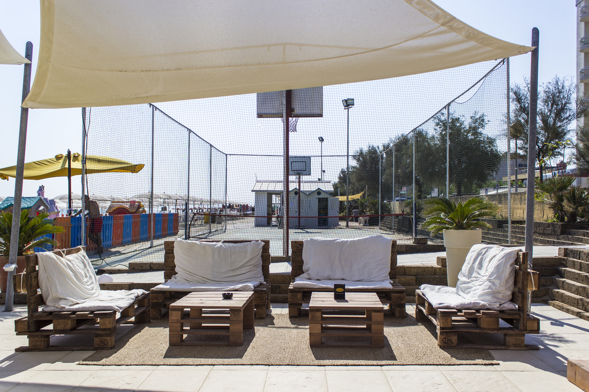
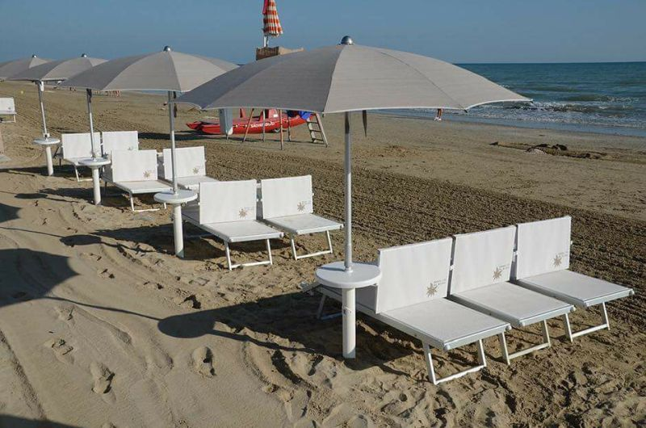

01
Spiaggia attrezzata
Ombrelloni, lettini, sdraio e spazi ordinati per alternare sole, lettura e bagni in mare.

Chiama
Senigallia · Spiaggia di Velluto
Stabilimento balneare, beach bar e ristorante: dal primo caffè all'ultimo drink, con una cucina a cura di Paolo della Bottega dei Sapori di Trecastelli, tra carni alla brace, pesce fresco e relax sulla sabbia.
Un lido con ritmo
18 Nodi unisce il comfort dello stabilimento attrezzato alla vitalità di un beach bar con musica, aperitivi e spazi pensati per famiglie, coppie e gruppi di amici. Il progetto richiama il mondo del kitesurf, con vele ombreggianti, legno chiaro e una pedana che di giorno accoglie il relax e la sera diventa spazio per eventi.
Ristorante in spiaggia
La ristorazione di 18 Nodi nasce dalla collaborazione con Paolo della Bottega dei Sapori di Trecastelli (AN): una cucina di territorio che porta in riva al mare materie prime selezionate, carni alla brace e pesce fresco, con il gusto genuino della tradizione marchigiana.
Carni pregiate alla griglia, vera firma della Bottega dei Sapori.
Pesce fresco e piatti di stagione che cambiano con il pescato.
Materie prime scelte, salumi e sapori autentici delle Marche.

Vivere 18 Nodi
Ombrelloni, lettini, sdraio e spazi ordinati per alternare sole, lettura e bagni in mare.
Cucina a cura della Bottega dei Sapori di Trecastelli: carni alla brace, pesce fresco, pranzi e aperitivi serviti direttamente in spiaggia.
Musica, serate a tema e una pedana versatile per vivere il lido anche dopo il tramonto.

Dal mattino alla sera
Colazione vista mare e prima sistemazione in spiaggia.
Pranzo al ristorante con la cucina della Bottega dei Sapori, senza allontanarsi dal lido.
Aperitivo sulla sabbia, drink freschi e atmosfera rilassata.
Musica, eventi estivi e dopocena a pochi passi dal mare.
Servizi
Connessione disponibile per restare sempre operativi o condividere il tuo momento al mare.
Spazi dedicati ai bambini per una vacanza più semplice anche per le famiglie.
Caffè, gelati, cocktail e aperitivi serviti nel cuore dello stabilimento.
Cucina a cura di Paolo della Bottega dei Sapori di Trecastelli: carni alla brace, pesce fresco e piatti del territorio.
Comfort pratico dopo il bagno, prima di rientrare o fermarsi per l'aperitivo.
Struttura indicata come accessibile e pensata per accogliere esigenze diverse.
Identita
18 Nodi richiama la passione per il kitesurf: vele, legno e linee pulite costruiscono un ambiente luminoso, informale e curato. Una base sul mare dove fermarsi senza fretta.
Galleria



Prenotazioni e informazioni
Contatta lo stabilimento per disponibilità di ombrelloni, aperitivi, serate e richieste speciali. Il modo più rapido è il telefono o WhatsApp.
Dove siamo
Arrivi dal Lungomare Leonardo da Vinci e trovi il lido affacciato direttamente sulla spiaggia.